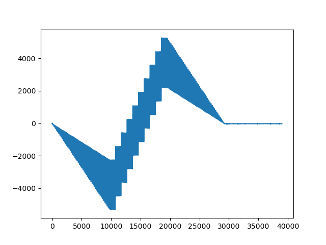

Sequence Ramping Example
In this example we combine the ramping and the sequence example to create a signal with known/predictable ramping behaviour. The ramping period is independant of the sequence. The sequence we use is a sequence that holds the first value of our intended sequence for the duration of the given number of ramping steps, which spans the ramp up period.
At the end of the "regular" sequence portion, the ramp down is triggered and the sequence holds the last value of the "regular" sequence until the end of the ramp down.

It is also possible to update the signal type during the acquisition without going back to the CONFIGURATION mode.
Julia Client
This and all other examples are located in the examples directory
using RedPitayaDAQServer
using CairoMakie
# obtain the URL of the RedPitaya
include("config.jl")
rp = RedPitaya(URLs[1])
serverMode!(rp, CONFIGURATION)
dec = 64
modulus = 124800*4
base_frequency = 125000000
periods_per_step = 5
samples_per_period = div(modulus, dec)
periods_per_frame = 50 # about 0.5 s frame length
frame_period = dec*samples_per_period*periods_per_frame / base_frequency
steps_per_frame = div(50, periods_per_step)
numFr = 8
decimation!(rp, dec)
samplesPerPeriod!(rp, samples_per_period)
periodsPerFrame!(rp, periods_per_frame)
frequencyDAC!(rp,1,1, base_frequency / modulus)
signalTypeDAC!(rp, 1 , 1, "SINE")
amplitudeDAC!(rp, 1, 1, 0.2)
phaseDAC!(rp, 1, 1, 0.0 )
triggerMode!(rp, INTERNAL)
# Ramp for 1 Frame
enableRamping!(rp, 1, true)
rampingDAC!(rp, 1, frame_period)
clearSequence!(rp)
stepsPerFrame!(rp, steps_per_frame)
seqChan!(rp, 1)
lut = collect(range(-0.5,0.5,length=steps_per_frame))
# HoldBorderSequence holds the first and last value for the given amount of steps
rampingSteps = steps_per_frame
seq = HoldBorderRampingSequence(lut, numFr, rampingSteps)
sequence!(rp, seq)
serverMode!(rp, ACQUISITION)
masterTrigger!(rp, true)
samples_per_step = (samples_per_period * periods_per_frame)/steps_per_frame
uCurrentFrame = readFrames(rp, 1, numFr+1)
masterTrigger!(rp, false)
serverMode!(rp, CONFIGURATION)
enableRamping!(rp, 1, false)
clearSequence!(rp)
plot = lines(vec(uCurrentFrame[:,1,:,1:4]))
save(joinpath(@__DIR__(), "images", "seqRamping.png"), plot)
plot